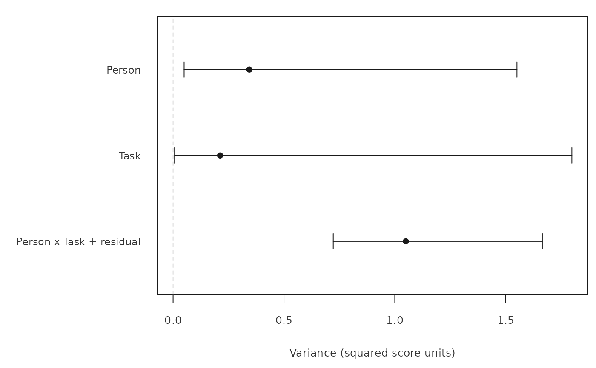
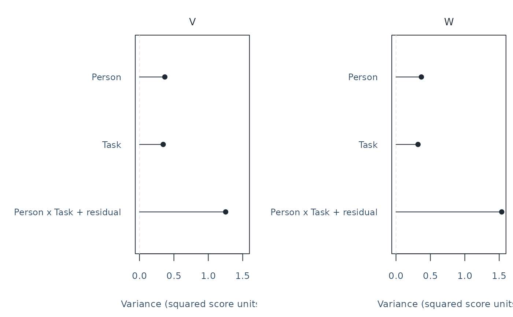
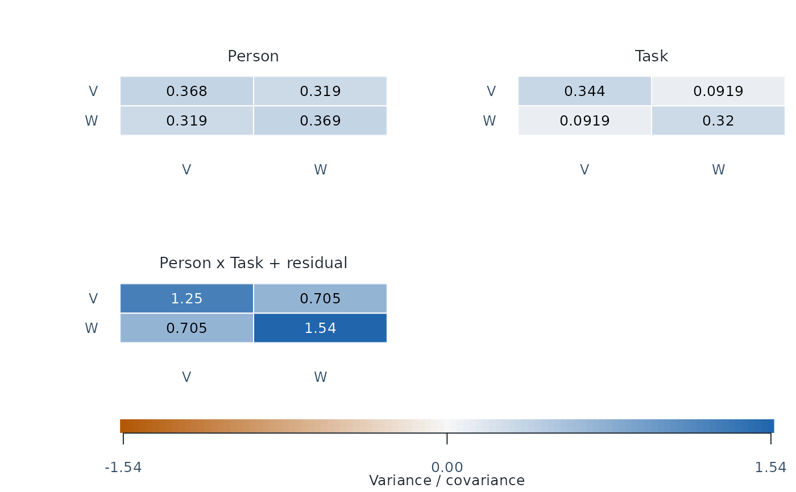
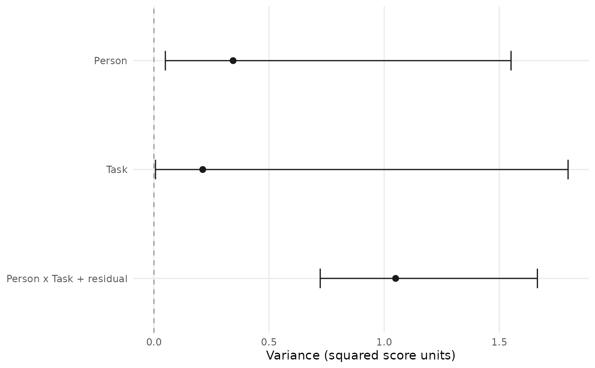

Inspect sources of observed-score variation
Source:R/api-plotting-multivariate-gstudy.R
plot.mfrm_multivariate_gstudy.RdPlot raw variance components for selected scores or one prespecified weighted
score, or inspect the component covariance matrices. Then use mfrm_d_study() to assess
how changing the measurement conditions affects G, Phi and SEM.
Arguments
- x
A result from
mfrm_g_study().- score
Original score names in display order. Multiple scores produce separate component panels. The default selects the first score for
type = "components", or all scores fortype = "covariance". Do not supply bothscoreandweights.- weights
Optional named numeric vector defining one composite. Name every score exactly once, with finite weights and at least one nonzero value. Names determine order. Signed weights permit difference scores; weights are not normalized. For a saved D-study, use its selected weight vector, for example
plot(d$gstudy, weights = d$weights).- draw
Draw the figure;
FALSEonly returns its data.- preset
Plot style:
"standard","publication","compact", or"monochrome". Omission uses the session plot default.- type
"components"for variance-component points, or"covariance"for one matrix heatmap per source. Withintervals = TRUE, covariance instead displays one signed interval plot for exactly two selected scores. Covariance plots do not acceptweights.- ncol
Positive number of panel columns. Defaults to at most two.
- intervals
Logical;
FALSE(default) shows point estimates.TRUEadds component confidence intervals in the same call; also specifyassumption = "normal". Available for complete balanced ANOVA component plots, including supported nesting. Covariance intervals require an explicit method and exactly two scores. Explicitmethod = "reml_profile"also provides variance and two-score covariance intervals for identifiable incomplete sources, fitting a separate REML model while preserving the original points.method = "residual_contrast"uses retained ratings without likelihood fitting, but only Residual receives an interval. Other points remain visible with unavailable intervals and their reasons. Other methods use saved ANOVA summaries without refitting.- assumption
With
intervals = TRUE, explicitly specify"normal"for independent normal random effects with constant component variances. This assumption is not tested.- level
Pointwise confidence level for
intervals = TRUE, default 0.95.- method
Component interval method passed to
confint.mfrm_multivariate_gstudy(). Single-score/composite variances use"auto"or"mls"for balanced ANOVA, or explicit experimental"reml_profile"for balanced/identifiable incomplete sources. Profile intervals have approximate calibration and no accompanying sampling SE. Covariance intervals require explicit"gci","regression_region"or"reml_profile"; none is an automatic default. Explicit"residual_contrast"also supports incomplete sources for Residual only: exact normal-model variance limits or conservative covariance limits. It retains original points and a separate interval center without supplying the original estimator's sampling SE.- draws, seed
Numerical settings for covariance
method = "gci". Defaults are 20000 pivotal draws and seed 20261016. See the confidence interval help for requirements and numerical endpoint bands.- ...
Reserved; additional arguments are rejected.
Value
Invisibly, an mfrm_plot_data object with table (source, display label, selected
estimate, sign status and full component-matrix PSD diagnostic),
weights, score, kind, source_design, source_rows, axis labels and
notes. plot, panels and ncol describe the view. Component tables include
Score; covariance tables include Row, Column and Element (variance
or covariance), with a shared fill_limits and heat_colors palette.
With intervals, table also includes SE, Lower, Upper, RawLower,
RawUpper, Level, Method, IntervalStatus and IntervalAvailable.
intervals retains one complete confint() table per selected score or
composite, with its assumptions and source context; unavailable_intervals
retains rows without a drawable interval. Status still describes the
sign of the point estimate.
REML component tables additionally retain IntervalCenter, SEStatus,
candidate bounds and Validation; full numerical profiles are retained
in intervals. Saving the plot preserves them for as_ggplot() reuse.
Covariance interval plots have kind = "Covariance", one forest panel,
and the original pair in score. The full interval table retains covariance
units, assumptions, numerical bands and SE/interval diagnostics.
Save the result with saveRDS() for later as_ggplot() conversion,
without recalculating intervals, or save the G-study to redraw it with
base graphics.
Details
Each point is a variance-component estimate in squared score units. For weights \(w\), the component is \(w' \Sigma_s w\), including between-score covariances. Multiplying all weights by a constant multiplies each component by its square. Components describe the source model at the individual rating level; they have not been divided by future facet counts. They are not percentages, measurement-error shares for a future mean score, or MFRM severity estimates. A larger Person component describes greater person variation, not a defect in the assessment. A large rater component does not by itself identify which rater should receive feedback.
Negative estimates remain to the left of zero as open circles; nonnegative estimates use filled circles. An unconstrained negative estimate is not a negative population variance. Inspect the data/design and component diagnostics before interpreting it. No component is clipped, normalized or removed. A covariance matrix can be non-positive-semidefinite even when its projection for the selected score is positive; this is retained in the returned table and notes.
With intervals = TRUE, horizontal bars replace the stems from zero.
They show the nonnegative-space intervals from
confint.mfrm_multivariate_gstudy(): approximate Ting MLS intervals for
components and chi-square intervals for the combined residual. They are
pointwise, not simultaneous across components or scores. Negative point
estimates can lie outside their nonnegative-space intervals. Square
outlines mark estimates without an interval; consult IntervalStatus
and unavailable_intervals for the reason. An empty interval or degenerate
mean squares do not mean zero uncertainty. Raw endpoints, SEs and the full
interval tables remain in the returned data. These intervals concern
source variances, not future mean-score errors, G/Phi or off-diagonal
covariance elements. With intervals = FALSE, stems run from zero to
the estimate and do not represent uncertainty.
With method = "reml_profile", the bars instead show approximate
restricted-likelihood component intervals. The points remain the original
ANOVA/MINQUE estimates; the separate IntervalCenter is retained in the
table. Profile SE and inapplicable MLS RawLower/RawUpper columns are
NA; SEStatus explains this. Numerical availability does not establish
coverage, especially near zero variances. The interval surrounds the REML
center but does not enumerate remote disconnected accepted regions.
With method = "residual_contrast", only Residual receives a bar, based
on a projection that removes all nonresidual effects. Points still show
original ANOVA/MINQUE components; IntervalCenter records the projected
residual estimate. No remaining residual degrees of freedom or numerically
unresolved residual variation means unavailable limits. Exact variance
coverage and conservative covariance coverage require the normal residual
model at a fixed observed assignment; they do not extend to other sources
or nonrandom omissions. See Residual contrasts in the interval help.
Multiple-score component panels share axes. Compare their magnitudes only
when the score units are comparable. Covariance heatmaps show the selected
submatrix for every source, with variances on the diagonal and covariances
off the diagonal. Covariance units are the product of the two score units;
these are not correlations. All panels share a color scale centered at zero
and include signed numeric labels. Color presets use a diverging palette;
"monochrome" uses a gray scale. Values are neither standardized nor
converted to correlations. A negative covariance can be legitimate; a
negative variance is an unconstrained estimate, not a population variance.
ComponentPSD and returned notes describe the full source matrix even if
only a subset of scores is shown. A large covariance alone does not diagnose
halo. Cell labels are rounded for display; the table keeps exact values.
With type = "covariance", intervals = TRUE, select exactly two scores
and an explicit method. A single horizontal interval plot across sources
replaces the heatmaps. Covariance endpoints remain signed, including
negative values. "gci" has approximate coverage and separate Monte Carlo
endpoint bands; "regression_region" has conservative normal-model
coverage but may be very wide. Square outlines retain unavailable intervals.
SEStatus is separate: a one-df block can prevent an SE while still
permitting a conservative interval. Open circles mark negative covariances,
which can be legitimate. Explicit "reml_profile" instead fits a joint
normal model, also for incomplete sources, and retains its separate
IntervalCenter and full numerical diagnostics. Its chi-square calibration
is experimental and can under-cover with few facet levels; no sampling SE
is supplied. None of these methods is a correlation interval.
All estimated interactions are shown. The table preserves the original
Source identifiers and adds a readable Label. For a crossed Person,
Rater and Task design, the last label is "Person x Rater x Task + residual".
Its Source remains Residual: with one observation per cell, the
highest-order interaction and other residual variation cannot be estimated
separately. A one-facet design instead shows "Person x Task + residual"
(or the declared facet name); a nested design shows, for example,
"Person x Rater(Task) + residual". No extra independent error component
should be added to these combined estimates.
Measurement error is not synonymous with the component called Residual.
For the supported random-facet mean-score projections, relative error
includes the person-by-condition interactions and combined residual;
absolute error additionally includes condition main effects and interactions
without Person. The D-study divides each component by its applicable future
counts, then adds these terms. Use plot(d, type = "sem") to view the square
roots of the two error variances. Neither SEM nor a residual-component point
is a sampling confidence interval. See mfrm_d_study() for
the formulas and assumptions, and vignette("mfrmr-gtheory") for a worked
source-to-error example.
This plot reads stored component estimates and preserves missing-data rules.
Explicit REML intervals fit a separate model without replacing those points;
other interval methods use the saved summaries.
Titles and explanations are returned separately from the figure. Use
plot_data(p, "notes") and keep them when sharing a figure. Both base R
graphics and optional as_ggplot() conversion are supported.
Examples
tasks <- read.csv(system.file("extdata", "mgenova-table12.csv", package = "mfrmr"))
g <- mfrm_g_study(tasks, c("V", "W"), rater = NULL)
p <- plot(g, weights = c(V = .5, W = .5), preset = "monochrome",
intervals = TRUE, assumption = "normal")

plot_data(p, "table")
#> Source Estimate ComponentPSD Score Panel Status
#> 1 Person 0.3438889 TRUE Composite 1 Nonnegative estimate
#> 2 Task 0.2120370 TRUE Composite 1 Nonnegative estimate
#> 3 Residual 1.0496296 TRUE Composite 1 Nonnegative estimate
#> Label SE Lower Upper RawLower RawUpper
#> 1 Person 0.2241526 0.049657449 1.550716 0.049657449 1.550716
#> 2 Task 0.1708214 0.006867325 1.798412 0.006867325 1.798412
#> 3 Person x Task + residual 0.2165221 0.722110052 1.665130 0.722110052 1.665130
#> Level Method IntervalStatus IntervalAvailable
#> 1 0.95 Ting MLS Available TRUE
#> 2 0.95 Ting MLS Available TRUE
#> 3 0.95 Chi-square Available TRUE
plot_data(p, "notes")
#> Type
#> 1 note
#> 2 note
#> 3 note
#> 4 note
#> 5 note
#> 6 note
#> 7 note
#> 8 note
#> 9 note
#> 10 note
#> 11 note
#> 12 note
#> Text
#> 1 Raw source-model variance components with 95% pointwise normal-random-effects intervals in squared score units. Not future mean-score error contributions or percentages.
#> 2 Residual = Person x Task + residual: these sources cannot be separated with one observation per person-by-condition cell.
#> 3 Person variation is not measurement error. Relative error combines person-by-condition interactions and residual; absolute error also includes condition main effects and interactions without Person. Divide components by their applicable future counts before summing; use the D-study SEM plot for error in mean-score units.
#> 4 Filled circles: nonnegative estimates; open circles: negative estimates. Weights are used as supplied.
#> 5 Horizontal bars show nonnegative-space intervals: approximate Ting MLS for components; chi-square for the combined residual. They are not simultaneous across sources or scores. Negative points are retained even when outside those intervals.
#> 6 Square outlines mark estimates without intervals; inspect IntervalStatus and unavailable_intervals. No bar does not mean zero uncertainty. Raw endpoints remain in the table.
#> 7 Pointwise normal-random-effects intervals for a prespecified score or fixed composite; MLS intervals are approximate. Not simultaneous or distribution robust.
#> 8 Estimates and SEs have squared score units. SE is sampling uncertainty in a component, not measurement SEM or uncertainty in G/Phi.
#> 9 Raw estimates and endpoints are retained. Lower/Upper intersect the interval with nonnegative variances; consult Status for empty or unavailable intervals.
#> 10 Positive intervals whose width or endpoints cannot be represented remain unavailable with an explicit Status; a rounded zero width is not exact population knowledge.
#> 11 SE uses the df + 2 moment correction. Weights are used as supplied; saveRDS() preserves assumptions and source context.
#> 12 Compare magnitudes only for comparable score units. Shared plot scales do not make different score units equivalent.
plot(g, score = c("V", "W"))

covariance_plot <- plot(g, type = "covariance")

plot_data(covariance_plot, "table")
#> Row Column Source Estimate Element ComponentPSD Panel
#> 1 V V Person 0.36814815 Variance TRUE 1
#> 2 W V Person 0.31925926 Covariance TRUE 1
#> 3 V W Person 0.31925926 Covariance TRUE 1
#> 4 W W Person 0.36888889 Variance TRUE 1
#> 5 V V Task 0.34444444 Variance TRUE 2
#> 6 W V Task 0.09185185 Covariance TRUE 2
#> 7 V W Task 0.09185185 Covariance TRUE 2
#> 8 W W Task 0.32000000 Variance TRUE 2
#> 9 V V Residual 1.25222222 Variance TRUE 3
#> 10 W V Residual 0.70481481 Covariance TRUE 3
#> 11 V W Residual 0.70481481 Covariance TRUE 3
#> 12 W W Residual 1.53666667 Variance TRUE 3
#> Status Label
#> 1 Nonnegative estimate Person
#> 2 Nonnegative estimate Person
#> 3 Nonnegative estimate Person
#> 4 Nonnegative estimate Person
#> 5 Nonnegative estimate Task
#> 6 Nonnegative estimate Task
#> 7 Nonnegative estimate Task
#> 8 Nonnegative estimate Task
#> 9 Nonnegative estimate Person x Task + residual
#> 10 Nonnegative estimate Person x Task + residual
#> 11 Nonnegative estimate Person x Task + residual
#> 12 Nonnegative estimate Person x Task + residual
if (requireNamespace("ggplot2", quietly = TRUE)) {
as_ggplot(p)
}
